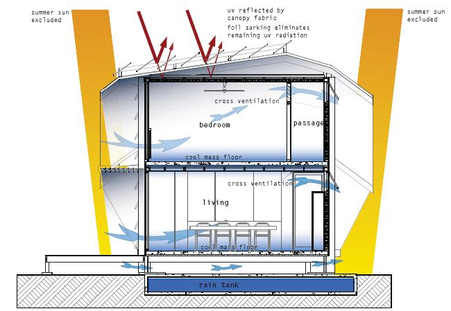

The obligations of European Union Member States on energy saving and CO2 emission mitigation affected by the 2006/32/EC Directive generated a great interest towards energy efficient buildings and passive house technology. In this direction, demand for Low Energy Houses has increased. A Low Energy House provides thermal comfort, healthy living, and lower heating costs. For instance, Low Energy Houses in Denmark succeeded in reducing the heating bill amount to only about 23 € per month or on a yearly basis – only roughly the same amount that a family in Denmark pays for television license. At the same time, the price falls within the normal range of traditional houses. Low energy buildings make use of renewable forms of energy, have better insulation values all over the building envelope, the windows are usually of better quality than normally prescribed by building regulations, better air tightness levels are achieved and heat recovery ventilation systems are used.
Renewable forms of energy include solar water heating, photovoltaic cells/panels, and wind power. Solar water heating in its simplest form is a flat coated metal panel, insulated underneath and with pipes containing water lying on the surface. As the panel heats from the sun, so does the water held in the pipes. The water is circulated over the panels, and back into the buildings hot water system. Photovoltaic cells/panels are composed of specially formulated cells that produce an electric current when light falls upon them. These are the same technology that a solar powered calculator uses for power, only on a larger scale. As demand increases, the overall cost of an installation is rapidly decreasing, especially allowing photovoltaic panels to be used for far more projects, including domestic use. Wind turbines generate clean and renewable energy with no harmful emissions and can thus help reduce a significant proportion of CO2 emissions.
Low Energy Houses use Passive Solar Design, specific orientation for windows, and recovery ventilation systems. Passive Solar Design in Low Energy Houses is based on two principles of ‘letting the sun come in’ and then ‘not letting it out again'. Insulation is built into the external envelope to significantly reduce the transfer of heat through the walls, roof and ground floor. The building envelope must be made airtight by careful and robust detailing in order to keep the heat loss to a minimum and to maintain a comfortable air temperature. Concerning windows, north-facing orientation is suitable. The windows should be large in cool climates, small and high-set when summer is hot and dry. There should not be much east-facing glass, even less on western walls. In hot, dry climates, there should be no eastern or western windows at all. Further, to reach very low levels of energy consumption (below 30-40 kWh/(m².a)) in residential buildings, balanced ventilation systems with heat recovery are needed, as otherwise there will be energy loss through ventilation and air leakage. In some cases, even room heating can be provided through the ventilation system. Occupant acceptance of balanced ventilation and attached heating systems will strongly influence the chances of the wide dissemination of very low energy buildings.

A connectedness with the outdoors throughout the year is a key consideration in Low Energy Houses. An exemplary case should intend for the passive solar design to take care of most space heating requirements. Window overhangs are configured to admit low angle winter sun and shade from summer sun (see Figures 5 and 6, respectively). The insulated concrete floors provide thermal mass (Figure 5). High insulation levels are also a key feature of the design. All windows and doors are double-glazed. Windows allow for good sealing when closed and act as large louvers when open. Blinds are provided for additional thermal comfort and to secure warm ambient temperatures on cool nights. Smaller windows facilitate cross ventilation and the necessary ‘relief valve’ to combat overheating in summer (Figure 6). No air-conditioning is proposed for the house. Cooling will be provided by ceiling fans, cross breezes and the use of the thermal mass in the floor.
All buildings built after 31 December 2018 in European Members States will have to produce as much energy as they consume on-site. The European Parliament amended the 2002 Energy Performance of Buildings Directive and called for more public investments in energy-efficient buildings. Parliament also instructed Member States to set intermediate national targets for existing buildings. If Member States succeed in accomplishing this objective, there will be zero-energy buildings all across European Union after 2018. Zero-energy buildings are defined as buildings where the overall annual primary energy consumption is equal to or less than the energy production from renewable energy sources on site. Additionally, buildings’ energy performance will be upgraded to meet minimum energy performance requirements whenever they undergo major renovations or building components and technical building systems (e.g., windows, boilers or air conditioning systems) are replaced. The European Commission will have to establish a common methodology for calculating the energy performance of buildings by 31 March 2010.